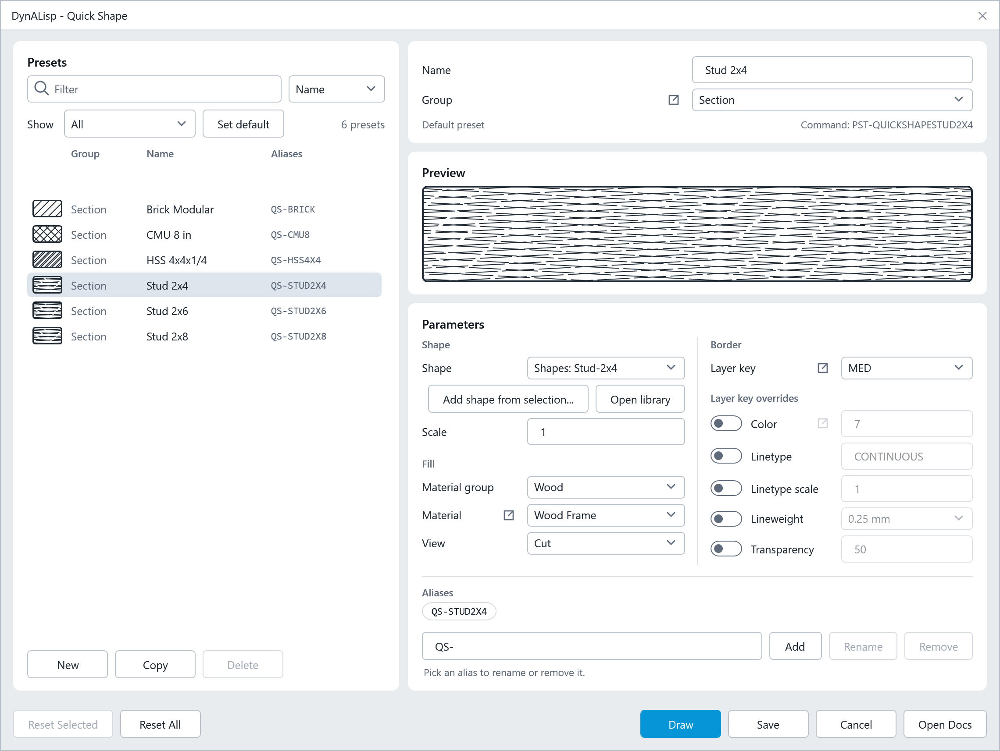

Forme rapide (Quick Shape)
| Syntaxe | DYL-QUICKSHAPE (onglet Quick Shape du gestionnaire) + 6 commandes préréglées – voir Commandes |
| Fenêtres | Groupes de préréglages (Preset Groups) |
| Fonctionne avec | Matériaux – ce qui remplit chaque forme Préréglages de hachures – la hachure de chaque matériau Simulation – simule les détails qu'il dessine Gestionnaire – le règle dans un onglet |
Description
Placez des formes toutes faites, déjà hachurées : montants, briques, blocs, tubes d'acier. Encore et encore, jusqu'à Entrée.

Utilisation
- Tapez une forme, QS-STUD2X4 pour un montant 2x4 (la liste plus bas).
- Choisissez son point, puis sa rotation. Entrée arrête.
- Pour en changer ou en ajouter une, tapez Dyl-QuickShape.
Fenêtre Quick Shape
- Material – ce qui remplit la forme, et View : Cut en coupe, Surface en élévation.
- Shape et Scale – la forme à placer et sa taille.
- Border – le calque et l'allure de son contour.
- Draw la place, Save garde les changements.
Ses fenêtres
Groupes de préréglages (Preset Groups)
Classez vos préréglages et matériaux en groupes : Wall, Section, Phase pour les préréglages, Masonry, Wood, Insulation pour les matériaux.


Groupes de préréglages (Preset Groups) →
Vos propres formes
- Add shape from selection... – sélectionnez les objets, choisissez le point de base, tapez un nom.
- Open library – ouvre le dessin des formes, pour les modifier.
- Dessinez les parties à remplir avec des contours fermés, sur le calque 0.
Les formes
| Alias | Forme | Matériau |
|---|---|---|
| QS-STUD2X4 | Montant 2x4 | Wood Frame |
| QS-STUD2X6 | Montant 2x6 | Wood Frame |
| QS-STUD2X8 | Montant 2x8 | Wood Frame |
| QS-BRICK | Brique modulaire | Brick |
| QS-CMU8 | Bloc de béton 8 po | CMU |
| QS-HSS4X4 | HSS 4x4x1/4 | Steel |
Limites connues
- Les attributs ne sont pas demandés ; les blocs dynamiques perdent leurs poignées.
Noms des commandes et alias
Les noms courts sont des alias de la commande : modifiez-les dans Dyl-Suite. Les rangées marquées ↳ sont ses variantes, lancées par leur nom court.
| Commande | Alias | Nom |
|---|---|---|
| Dyl-QuickShape | – | Quick Shape |
| ↳ QS-STUD2X4 | – | Quick Shape Stud 2x4 |
| ↳ QS-STUD2X6 | – | Quick Shape Stud 2x6 |
| ↳ QS-STUD2X8 | – | Quick Shape Stud 2x8 |
| ↳ QS-BRICK | – | Quick Shape Brick Modular |
| ↳ QS-CMU8 | – | Quick Shape CMU 8 in |
| ↳ QS-HSS4X4 | – | Quick Shape HSS 4x4 |